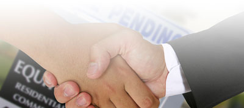

Planet Podium’s Areas of Expertise
Planet Podium provides professional moderators, facilitators and chairs for conferences, seminars and events in Europe and other international locations. Our team is made up of accomplished television and radio broadcasters who can chair conferences on a range of topics from current affairs and business to EU issues, political, social, human rights, environmental and other subjects.
We can provide moderators for many types of events ranging from small and intimate seminars to large conferences involving VIP guests and audience participation.

Planning and Preparation
At Planet Podium we want to ensure your event runs as smoothly as possible and so we will work closely with you to ensure our moderators are fully informed about your event and what they are required to do. We are happy to provide any relevant advice and assistance you may need in the run-up to your event. We will liaise with event organisers and other critical participants to ensure they receive the maximum benefit from our experience and knowledge of moderating events.
We are happy to provide advice on powerpoint or other presentations, timings, panellists, audience participation, treatment of event etc. We always ensure our moderators are fully briefed about the event and the participants and panellists they will be dealing with.

Trouble-Shooting Awkward Situations
An event can be badly compromised by participants who speak too long and run way over time. Awkward situations can also arise if audience members are difficult to control and try to take over an event. Our moderators can adeptly handle these kind of awkward situations. Participants who run over time will be diplomatically requested to finish and tricky audience members can be politely but firmly handled.

European Union Issues
It can be challenging to find competent moderators who are adept at chairing events that deal with complex and often technical European Union issues. Our team at Planet Podium have many years experience working in this field and are not phased by chairing weighty European events.

Equality
Many of our clients request female moderators to redress gender imbalances on male-dominated panels. We can provide excellent women moderators to achieve a better gender balance for all sorts of events.
We don’t have any space for Prima Donnas on Planet Podium. Our moderators are not difficult celebrities who require lots of hand-holding and who charge a fortune. Our team is made up of down-to-earth professionals whose main aim is to ensure your event is chaired expertly and at competitive rates.
Requirements
Our moderators are native English speakers who are easy to work with and keen to ensure our clients’ events run as smoothly as possible.
Our moderators will travel to different locations in Europe and beyond for events provided travel, accommodation and other relevant expenses are covered.